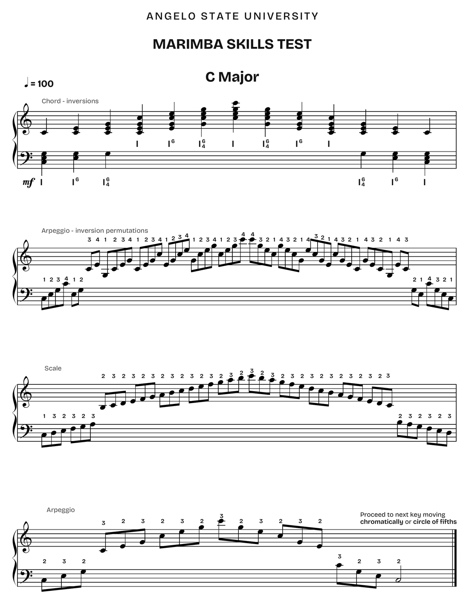

Angelo State University
Percussion Studio Handbook
Trent W. Shuey, D.M.A.
Assistant Director of Bands | Senior Instructor of Percussion
Revised August 2026
Contents
What’s Inside
Part One
The Studio
Contact
| Office | Carr Education-Fine Arts Building, Room 210 |
|---|---|
| Office phone | 325-486-6036 |
| trent.shuey@angelo.edu | |
| Website | www.trentshuey.com |
Weekly Schedule
| Activity | Meeting Time |
|---|---|
| Applied Lessons | Scheduled individually and set for the semester |
| Studio Class | Mondays, 4:00–4:50 p.m. |
| Percussion Ensemble | Tuesdays and Thursdays, 4:00–4:50 p.m. (fall 2026); 2:00–3:15 p.m. (spring 2027) |
Expectations
Everyone performs in Studio Class and Percussion Ensemble. Percussion Ensemble is an essential lab experience of applied study; majors do not audition.
Keep a lesson notebook: assignments, technical and musical comments, goals, studio class materials, practice logs. The shared Google Doc is not enough.
Bring sticks, mallets, music, a pencil, and your lesson log to every lesson.
Attend every equipment move for any ensemble you are in. Failing to attend and assist reduces your grade.
B.M. and B.A. students practice two hours a day. Non-majors, one hour.
Attendance & Communication
Give notice by the night before if you cannot attend a lesson: email, text, or call. Late notice affects your grade. Missed lessons are made up at a time convenient to both of us.
You have two free absences across lessons, studio class, and ensemble combined. Choose them wisely: each one after the second drops your final grade a letter.
Grading
Assuming consistent attendance, grades are assigned as follows:
| A | Superior. Accurate, musically sensitive performance of the weekly goals, with steady development. |
|---|---|
| B | Above average. Stylistic awareness, largely accurate mechanics, most assigned material performed successfully. |
| C | Average. Less than desirable progress; good understanding, but inconsistent accuracy and erratic development. |
| D | Below average. Numerous repetitions, stops and starts, erratic tempo, weekly goals unmet. |
| F | Minimal performance standards not met. |
Lessons and studio class performances are graded on preparation and growth, not perfection.
Practice Rooms
Room 288 is the main percussion room: the 5.0-octave Yamaha YM-5100 marimba, Musser vibraphone, four Ludwig timpani, the snare collection, drum sets, and storage.
Sign up on the posted schedule for up to two hours a day. A reserved slot may be taken over if you are more than ten minutes late (lights off, room empty).
Three further rooms hold a 4.3-octave Musser kelon marimba, a 4.0-octave Musser rosewood, and a xylophone. Room 134 is also available, with a full complement.
Percussive Arts Society
Join the Percussive Arts Society at www.pas.org: $50 a year for members 26 and under, $75 standard.
PASIC runs each November in Indianapolis, now its permanent home through 2028. PASIC 2026 is November 11–14. You are strongly encouraged to attend.
Part Two
The Skills Assessment Test
You must pass the Skills Assessment Test before performing the Junior Recital (MUAP 3199) or Senior Recital (MUAP 4199). It demonstrates the fundamental skills successful performance rests on.
Attempts. Once per semester. Tests are given during jury week.
The Three Components
Scales ♩ = 100
Scales Major Block chords (four mallets), arpeggios in inversions (four mallets), major scales (inner mallets), and arpeggios (two mallets). Three octaves in practical range, performed from memory. Harmonic Minor Block chords (four mallets), arpeggios in inversions (four mallets), harmonic minor scales (inner mallets), and arpeggios (two mallets). Three octaves in practical range, performed from memory. Chromatic Performed from memory through the practical range of the instrument. Rudiments
All 40 Percussive Arts Society International Drum Rudiments, performed from memory. Each rudiment must be played eight times in succession without error.
Sight-Reading
Snare drum, timpani, and two-mallet keyboard. Read at sight a piece that is idiomatic to the instrument and level-appropriate.
How the Test Is Scored
You prepare everything; the panel selects. Every key, all forty rudiments, and all three instruments must be ready: what you play on the day is drawn from that pool.
| Component | Drawn | To Pass |
|---|---|---|
| Major keys | 4 drawn | All 4 must pass |
| Harmonic minor keys | 4 drawn | All 4 must pass |
| Rudiments | 4 drawn | All 4 must pass |
| Sight-reading | 3 readings | 2 of 3 must pass |
Preparing only what you expect to be asked is the most common way this test is failed. Prepare the pool.
What a Prepared Key Looks Like
C major from the marimba packet: chord inversions, arpeggio permutations with stickings, and the scale, in the form the test expects. The full packet covers every key and is distributed separately as ASU Skills Test: Major Keys.

Harmonic minor. The packet is written out in major only. For each harmonic minor key, apply the same pattern in the minor mode.
Grading Sheet
Reproduced so you know what the panel marks.
Scales
Major key: all 4 needed to pass
Minor key: all 4 needed to pass
Rudiments
4 needed to pass
Sight-Reading
2 of 3 needed to pass
Total
Part Three
Materials & Equipment
The books you buy, the sticks and mallets you own, and where to get them.
Required Method Books
Snare Drum
- Cirone, Anthony J. Portraits in Rhythm: 50 Studies for Snare Drum
- Pratt, John S. 14 Modern Contest Solos for Snare Drum
- Wilcoxon, Charles The All-American Drummer: 150 Rudimental Solos
- Peters, Mitchell Elementary Snare Drum Studies
- Peters, Mitchell Intermediate Snare Drum Studies
- Peters, Mitchell Advanced Snare Drum Studies
- Peters, Mitchell Developing Dexterity for Snare Drum
- Carroll, Raynor Orchestral Repertoire for the Snare Drum
- Delécluse, Jacques Keiskleiriana 1: 13 Études pour Caisse-Claire
- Delécluse, Jacques Keiskleiriana 2: 12 Études pour Caisse-Claire
- Delécluse, Jacques Douze Études pour Caisse-Claire
- Savage, Matt Rudimental Workshop
Keyboard Percussion
- Stevens, Leigh Howard Method of Movement for Marimba: With 590 Exercises
- Quartier, Bart Image: Twenty Children’s Songs for Marimba
- Green, George Hamilton Instruction Course for Xylophone
- Green, George Hamilton Xylophone Rags of George Hamilton Green
- Goldenberg, Morris Modern School for Xylophone, Marimba, and Vibraphone
- Ford, Mark Marimba: Technique Through Music
- Kite, Rebecca Reading Mallet Percussion Music: Four Octave Marimba
- Friedman, David Vibraphone Technique: Dampening and Pedaling
- Metzger, Jon The Art and Language of Jazz Vibes
- Carroll, Raynor Orchestral Repertoire for the Glockenspiel (Vols. 1–2)
- Carroll, Raynor Orchestral Repertoire for the Xylophone (Vols. 1–2)
- Bach, Johann Sebastian Complete Suites for Unaccompanied Cello
- Bach, Johann Sebastian Works for Violin (Bach-Gesellschaft Edition)
- The Real Book
Timpani
- Carroll, Raynor Exercises, Etudes and Solos for the Timpani
- Hochrainer, Richard Etüden für Timpani (Vol. 3)
- Tafoya, John The Working Timpanist’s Survival Guide
- Tafoya, John Beyond the Audition Screen
- Max, Randy Orchestral Excerpts for Timpani
- Lepak, Alexander The Friese-Lepak Timpani Method
Drum Set
- Chapin, Jim Advanced Techniques for the Modern Drummer
- Reed, Ted Progressive Steps to Syncopation for the Modern Drummer
- Riley, John The Art of Bop Drumming
- Houghton, Steve Essential Styles for the Drummer and Bassist
- Garibaldi, David Future Sounds: A Book of Contemporary Drumset Concepts
- Igoe, Tommy Groove Essentials: The Play-Along
- Igoe, Tommy Groove Essentials 2.0
- Malabe, Frank Afro-Cuban Rhythms for Drumset
- Uribe, Ed The Essence of Afro-Cuban Percussion and Drum Set
Reference & Recommended Reading
Reference
- Blades, James Percussion Instruments and Their History
- Cirone, Anthony Cirone’s Pocket Dictionary of Foreign Musical Terms
Recommended Reading
- Kite, Rebecca Keiko Abe, A Virtuosic Life
- Schick, Steven The Percussionist’s Art: Same Bed, Different Dreams
Required Equipment
Snare Drum
| Concert snare sticks | Innovative IP1 (IPJC, IPJC2, or equivalent); Copperman; Vic Firth SD1 or Symphonic Signature Ted Atkatz SATK |
|---|
Keyboard Percussion
| Glockenspiel | Innovative IP906 or Malletech ORR48 Phenolic, one pair |
|---|---|
| Ensemble xylophone | Innovative IP905 or Malletech Plastic, one pair |
| Solo xylophone | Innovative IP902 or Malletech BB34 Poly, one pair |
| Crotales | Innovative IP760R Aluminum, one pair |
| Vibraphone | Malletech Dave Samuels DS18, two pair |
| Marimba | Vic Firth Robert van Sice M114, two pair (M113, M112, and M115 also useful) |
| Marimba | Innovative ENS360 Hard Rubber, two pair |
Timpani
| Timpani mallets | Cloyd Duff #2, #4, #6, #10 |
|---|---|
| Tuning fork | A-440 |
Drum Set
| Sticks | Innovative or Vic Firth 5A; Vic Firth 8D for jazz; or comparable |
|---|---|
| Brushes | Wire brushes |
Accessories
Buy once and buy well: this equipment outlasts the degree.
| Item | Recommended | Notes |
|---|---|---|
| Metronome | Boss Dr. Beat (DB-90) or comparable | Must subdivide, and must take headphones. Phone apps are for convenience, not for lessons. |
| Practice pad | Gum-rubber or comparable practice pad | For dorm and travel practice. Bring it to studio class when asked. |
| Hearing protection | Musician’s earplugs (ER-20 or custom-molded) | Required for drumline, ensemble, and drum set work. Your ears are the one instrument you cannot replace. |
| Suspended cymbal & woodblock mallets | Ron Vaughn LBM-3R or CYMM-4R | One pair of each. |
| Triangle | Abel, Black Swamp, Grover, Sabian HH, or Studio 49 | Buy the best single triangle you can afford before you buy a second one. |
| Triangle beaters | Black Swamp Spectrum or Stoessel-Weiner | A graduated set. One size will not cover the literature. |
| Tambourine | Black Swamp or Grover | A 10" double-row instrument is the general-purpose choice. |
| Woodblock | Black Swamp | |
| Castanets | Epstein | Mounted paddle castanets. |
| Bass drum mallets | Vic Firth Gauger | |
| Mallet bag | Large-capacity bag or roll | It must hold everything above and survive being loaded into a truck. |
Purchasing Music & Supplies
Buy your music and books. Photocopies are illegal and not acceptable; failing to obtain assigned music reduces your grade.
Locally, Tarpley Music Co., 325-665-7381. Online, Steve Weiss Music, JW Pepper, and Amazon.
Part Four
Repertoire & Reference
Excerpts, marimba and timpani fundamentals, repertoire, the players to know, and how percussion got here.
Essential Orchestral Excerpts
Timpani
- Mozart
- Symphony No. 39
- Beethoven
- Symphonies Nos. 1, 5, 7, 9
- Brahms
- Symphony No. 1
- Tchaikovsky
- Symphony No. 4
- Strauss
- Burleske
- Elgar
- Enigma Variations
- Mahler
- Symphony No. 5
- Stravinsky
- The Rite of Spring
- Shostakovich
- Symphony No. 1
- Bartók
- Music for Strings, Percussion and Celesta; Concerto for Orchestra
- Hindemith
- Symphonic Metamorphosis
- Schuman
- New England Triptych
Snare Drum
- Bartók
- Concerto for Orchestra
- Prokofiev
- Lt. Kijé Suite; Peter and the Wolf
- Ravel
- Boléro
- Rimsky-Korsakov
- Capriccio espagnol; Scheherazade
- Schuman
- Symphony No. 3
- Shostakovich
- Symphony No. 10
Xylophone
- Copland
- Appalachian Spring
- Gershwin
- An American in Paris; Porgy and Bess Overture
- Kabalevsky
- Colas Breugnon Overture
- Kodály
- Háry János Suite
- Schuman
- Symphony No. 3
- Shostakovich
- Polka from The Golden Age
- Stravinsky
- The Firebird (complete)
Glockenspiel
- Debussy
- La Mer
- Dukas
- The Sorcerer’s Apprentice
- Glazunov
- Violin Concerto
- Kodály
- Háry János Suite
- Mozart
- The Magic Flute
- Respighi
- The Pines of Rome
- Strauss
- Don Juan
- Tchaikovsky
- Waltz from The Sleeping Beauty
Bass Drum
- Berlioz
- Symphonie fantastique
- Mahler
- Symphony No. 3
- Stravinsky
- The Rite of Spring
- Tchaikovsky
- Romeo and Juliet Overture
Cymbals
- Mussorgsky
- Night on Bald Mountain
- Rachmaninoff
- Piano Concerto No. 2
- Tchaikovsky
- Romeo and Juliet Overture; Symphony No. 4
Tambourine
- Bizet
- Carmen
- Dvořák
- Carnival Overture
- Stravinsky
- Pétrouchka (1947)
- Tchaikovsky
- The Nutcracker
Triangle
- Bizet
- Carmen
- Brahms
- Symphony No. 4
- Dvořák
- Symphony No. 9
- Liszt
- Piano Concerto No. 1
Marimba Fundamentals
- Play in the center of the naturals and at the extreme edge of the accidentals. Two exceptions: in the lowest octave of a 5.0 marimba, slightly off center (still within the resonator) strengthens the fundamental against the double-octave overtone; in the top octave, play accidentals in the center too.
- Keep all mallets aligned to those spots. As a visual aid, run two lengths of white acrylic yarn: one across the centers of the naturals, one half an inch in front of the accidentals. Strike on the line for naturals, in front of it for accidentals.
- Stand back far enough that the mallets’ natural position (elbows forward of the shoulders, even with the front of the torso) falls on the center of the naturals. Keep the hips still; move the hands.
- The two-mallet tremolo strikes the center or end of the bar, positioned as on snare. Rotate the wrists slightly outward until the thumb reaches about 45 degrees so the mallets clear each other.
- Match tremolo speed to the resonance of each bar.
George Hamilton Green: Instruction Course for Xylophone
- Read all the text: introduction and individual lessons.
- Hold one tempo per lesson, especially the first two pages. "Ragtime" may take a different tempo; hold it for the whole page. Half tempo for double stops and repetitive single-hand motion.
- Accuracy first, then velocity. Start slow enough for complete accuracy, then raise the tempo in steps only while accuracy holds: Lesson One might run half note = 60, 80, 100, 120.
- Analyze the harmonic basis of each exercise, the ragtime studies especially. Call out the chord changes while playing, without writing them in.
Leigh Howard Stevens: Method of Movement for Marimba
- Read all the text, even if you do not use Stevens grip: the principles apply to every grip.
- Work the Daily Exercise Routines chart at the back across the layers and down the levels. See my expanded D.E.R. chart.
- Transpose through all twelve keys by whole steps, not chromatically: up one whole-tone scale to the octave, down the other a half step lower, ending where you began.
- Analyze the structure and harmonic basis of each exercise.
Bart Quartier: Image
- Read all the text, including the performance notes.
- Treat the printed tempos as goals: a few are optimistic. Build to them while holding accuracy and phrasing.
- Apply standard phrasing on top of the printed dynamics.
- Quartier’s companion volume, Imagine, is an excellent guide to Image. Recommended.
Marimba Repertoire List
(ms) indicates a work available in manuscript; (+ CD) indicates publication with a recording.
I. Technique
- Bart Quartier: Image
- Leigh Howard Stevens: Method of Movement
- Gordon Stout: Ideo-Kinetics Workbook
- Nancy Zeltsman: Four-Mallet Marimba Playing
II. Early Marimba Repertoire
- Alfred Fissinger: Suite
- Akira Miyoshi: Conversation Suite
- Clair O. Musser: Etudes Op. 6, Nos. 8–10
- Paul Sifler: Marimba Suite
III. Transcriptions
- J. S. Bach: Six Suites for Violoncello
- J. S. Bach: Sonatas and Partitas for Violin
- J. S. Bach: Two-Part Inventions
- J. S. Bach: The Well-Tempered Clavier
IV. Early Concerti
- James Basta: Concerto for Marimba
- Paul Creston: Concertino for Marimba
- Robert Kurka: Concerto for Marimba
- Darius Milhaud: Concerto for Marimba and Vibraphone
- Jorge Sarmientos: Concerto for Marimba
V. Modern Etudes & Companion Pieces
- Michael Burritt: Marimbetudes Nos. 1–6; Four Movements
- Raymond Helble: Preludes Nos. 1–9; Grand Fantasy
- Paul Smadbeck: Etudes Nos. 1–3; Rhythm Song
- Gordon Stout: Etudes Nos. 1–14; Two Mexican Dances
VI. Abe Improvisations
- Keiko Abe: Dream of the Cherry Blossoms
- Keiko Abe: Michi
- Keiko Abe: Works for Marimba; Works for Solo Marimba
VII. Abe Commissions
- Yoshio Hachimura: Ahania (ms)
- Minoru Miki: Time
- Akira Miyoshi: Torse III
- Tokuhide Niimi: For Marimba I & II
- Yasuo Sueyoshi: Mirage
- Toshimitsu Tanaka: Two Movements
VIII. Stevens Commissions
- Raymond Helble: Toccata Fantasy
- David Maslanka: Variations on Lost Love
- John Serry: Night Rhapsody
- John Serry: West Side Suite (ms)
- Christopher Stowens: Atamasco (+ CD) (ms)
IX. Moersch Commissions
- Irwin Bazelon: Suite for Marimba
- Richard Rodney Bennett: After Syrinx II
- Eric Ewazen: Northern Lights
- Harold Farberman: "A" Train
- Akemi Naito: Memory of the Woods
- Andrew Thomas: Merlin
X. Moersch, Stevens, Stout, van Sice & Zeltsman: NEA and Meet the Composer Commissions
- Jacob Druckman: Reflections on the Nature of Water
- Steven Mackey: See Ya Thursday
- Eugene O’Brien: Rhyme and Reason (ms)
- Roger Reynolds: Islands from Archipelago II: Autumn Island
- Gunther Schuller: Marimbology
- Joseph Schwantner: Velocities
XI. Miscellaneous Solo Repertoire
- Robert Aldridge: From My Little Island
- Daniel Asia: Marimba Music
- Markus Halt: Marimbasonic
- Matthew Harris: Potpourri
- Evan Hause: Fields (ms)
- Peter Klatzow: Dances of Earth and Fire
- Gary Kulesha: Angels (+ CD)
- Paul Lansky: Three Moves
- Áskell Másson: Sonata
- Daniel McCarthy: Rimbasly (+ CD)
- Andy Pape: Marrrrimba
- Marta Ptaszyńska: Graffito
- Suzanne Sheppard: Suite
- Gary Smart: The Seasons (ms)
- Martin Wesley-Smith: For Marimba and Tape (+ CD)
- Takayoshi Yoshioka: Suites Nos. 1–3
- Nebojša Živković: Ilijaš
- Various: Intermediate Masterworks for Marimba, Vols. 1–2
XII. Chamber Music with Winds or Brass
- Eric Ewazen: Mosaics
- David Kechley: Valencia
- Peter Klatzow: Figures in a Landscape
- William Thomas McKinley: SingleTree (ms)
- Gordon Stout: Duo (Dance-Song)
- Tsuneya Tanabe: Recollections of the Inland Sea
- Alec Wilder: Suite
- Akira Yuyama: Divertimento
XIII. Chamber Music with Strings
- Steve Adams: Owed T’Don (ms)
- Simon Bainbridge: Marimolin Inventions
- Paul Desenne: Four and a Half Movements (ms)
- William Kraft: Encounters X (ms)
- Paul Lansky: Hop
- Thomas Oboe Lee: Marimolin
- Robert Nieske: Marimba Quartet (ms)
- Gunther Schuller: Phantasmata
- Alejandro Viñao: Tumblers (+ CD) (ms)
XIV. Chamber Music with Piano or Percussion
- Irwin Bazelon: Partnership
- Luciano Berio: Linea
- Minoru Miki: Marimba Spiritual
- Steve Reich: Piano Phase; Nagoya Marimbas
- Toru Takemitsu: Rain Tree
- Andrew Thomas: Hexengeheule
- Charles Wuorinen: Percussion Duo
- Nebojša Živković: Uneven Souls
XV. Chamber Music with Mixed Ensemble
- Irwin Bazelon: Quintessentials
- Peter Maxwell Davies: Ave Maris Stella
- Jacob Druckman: Bo
- Takekuni Hirayoshi: Dialog for Marimba and 3 Instruments (ms)
- Minoru Miki: Sohmon III
- Akira Miyoshi: Nocturne
- Teruyuki Noda: Quintet "Mattinata"
- Yoshihisa Taira: Pentalpha
XVI. Japanese Concerti
- Keiko Abe: Prism Rhapsody
- Akira Ifukube: Lauda Concertata
- Minoru Miki: Concerto for Marimba
- Akira Miyoshi: Concerto for Marimba
- Toru Takemitsu: Gitimalya
- Toshimitsu Tanaka: Marimba Concerto (Sadlo Concerto)
- Takayoshi Yoshioka: Marimba Concerto No. 1 (ms)
XVII. European Concerti
- Franghiz Ali-Zadeh: Concerto for Marimba
- Marcin Błażewicz: Marimba Concerto No. 2
- Anders Koppel: Concerto for Marimba
- Áskell Másson: Marimba Concerto (ms)
- Emmanuel Séjourné: Concerto for Marimba
- Erkki-Sven Tüür: Ardor (Marimba Concerto)
- Nebojša Živković: Concerto No. 2 for Marimba
XVIII. Modern Concerti
- Richard Rodney Bennett: Concerto for Marimba
- Eric Ewazen: Concerto for Marimba
- Peter Klatzow: Concerto for Marimba; Concerto for Marimba and Flute
- Libby Larsen: Marimba Concerto: After Hampton
- Frank Nuyts: Woodnotes (ms)
- Tomas Svoboda: Concerto for Marimba
- Andrew Thomas: Loving Mad Tom
Basics of Timpani Technique
Timpani Systems
- American system: low drum on the left.
- German system (traditional): low drum on the right.
Ranges & Typical Notes
| Drum | Range | Typical Notes |
|---|---|---|
| 32" | D–A (low C on some drums) | D, E, F, G |
| 29" | F–C | A, B, C |
| 26" | B♭–F | D, E, F |
| 23" | D–A | F, G, A |
| 20" | F–C | A, B, C |
Accidentals are available throughout each range.
Stick Assortment
Match stick choice to articulation, not to dynamics.
- Soft white damper felt: "large ball" or "cartwheel."
- Medium white damper felt: "medium ball" or "general."
- Hard white damper felt: "small ball" or "staccato."
- Wood, or chamois-covered wood.
Tuning
Ear Development
- Match pitches.
- Write out, memorize, and practice singing intervals up and down.
- Sing intervals against a tuning fork (A-440).
Basic Method
- Listen to the pitch.
- Sing the pitch.
- Think the pitch.
- Tap the head once with a finger, never a stick.
- Raise the pitch to match the pitch in your mind’s ear.
- Sing to check the drum.
- Make corrections.
Playing Technique
Grips
- French: thumbs on top; finger and forearm motion.
- German: hands on top; wrist and arm motion.
Basic Stroke
- Imitate and assist the natural rebound: lift.
- Dynamics are controlled by stroke height.
- Articulation is controlled by stroke speed.
Rolls
- Unmeasured.
- Match roll speed to pitch and resonance: slower low, faster high; faster soft, slower loud.
- Every roll has three parts: attack, sustain, release.
Position
- Between the tension rods, three to four inches from the edge.
- Hands roughly six inches apart (the length of a dollar bill).
- Closed position for rhythms; open position for rolls.
Muffling
- Direct pressure with the last three fingers.
- Muffle to match the ensemble’s articulation, to clear between drums, and to drop from loud to soft.
Phrasing
- Bring out the lower drums, slightly louder.
- Bring out smaller note values, weak parts of the beat, and grace notes.
Recommended Literature
- Raynor Carroll Exercises, Etudes, and Solos for Timpani
- Richard Hochrainer Etüden für Timpani (Vol. 3)
- John Tafoya The Working Timpanist’s Survival Guide
Percussionists to Know
A starting list. Know what excellence sounds like in every corner of the field, and who set the standard. Listen actively, with a score where you can find one, and keep adding names.
- Orchestral & Solo Classical
- Evelyn Glennie · Colin Currie · Martin Grubinger · Steven Schick · Christopher Lamb (New York Philharmonic) · Cynthia Yeh (Chicago Symphony) · Anthony Cirone · Jack Van Geem · Ney Rosauro
- Marimba
- Keiko Abe · Leigh Howard Stevens · Gordon Stout · William Moersch · Nancy Zeltsman · Robert van Sice · She-e Wu · Michael Burritt · Nebojša Živković · Kevin Bobo · Pius Cheung · Ji Hye Jung
- Timpani
- Cloyd Duff · Fred Hinger · Vic Firth · Jonathan Haas · John Tafoya · David Herbert · Duncan Patton
- Percussion Ensembles
- Nexus · Les Percussions de Strasbourg · Kroumata · Amadinda · So Percussion · Third Coast Percussion · Sandbox Percussion
- Jazz Vibraphone
- Lionel Hampton · Red Norvo · Milt Jackson · Cal Tjader · Terry Gibbs · Gary Burton · Bobby Hutcherson · David Friedman · Dave Samuels · Mike Mainieri · Arthur Lipner · Joe Locke · Stefon Harris · Warren Wolf · Sasha Berliner
- Drum Set: Foundations
- Gene Krupa · Papa Jo Jones · Buddy Rich · Max Roach · Art Blakey · Philly Joe Jones · Louie Bellson · Roy Haynes · Elvin Jones · Tony Williams · Jack DeJohnette
- Drum Set: Studio & Fusion
- Steve Gadd · Peter Erskine · Vinnie Colaiuta · Dave Weckl · Steve Smith · Dennis Chambers · Omar Hakim · Jeff Hamilton · John Riley · Steve Houghton · Keith Copeland · Dennis Mackrel · Gregg Bissonette · Manu Katché · Alex Acuña · Kenny Aronoff
- Drum Set: Rock & Pop
- Phil Collins · Neil Peart · Stewart Copeland · Danny Carey · Mike Portnoy · Josh Freese · Carter Beauford · Sheila E. · Cindy Blackman Santana
- Drum Set: Funk & Modern
- Bernard Purdie · Clyde Stubblefield · JoJo Mayer · Thomas Pridgen · Questlove · Chris Dave · Brian Blade · Mark Guiliana · Nate Smith · Terri Lyne Carrington · Larnell Lewis · Anika Nilles
- Latin & Afro-Cuban
- Chano Pozo · Cándido Camero · Mongo Santamaría · Tito Puente · Ray Barretto · Patato Valdés · Changuito · Poncho Sanchez · Giovanni Hidalgo · Luis Conte · Alex Acuña · Manolo Badrena · Horacio "El Negro" Hernández · Pedrito Martínez
- World & Frame Drum
- Glen Velez · Zakir Hussain · Trilok Gurtu · Naná Vasconcelos · Airto Moreira · Jamey Haddad · Mamady Keïta · Famoudou Konaté · Layne Redmond · Hamid Drake
- Rudimental & Marching
- John Wooton · Jeff Queen · Bill Bachman · Thom Hannum · Julie Davila · Colin McNutt · Murray Gusseck
Orchestral Percussion Chronology
- 1100–1300
- Arabic musical instruments are introduced into Europe by way of the Crusades
Renaissance Period (1400–1600)
- 1457
- The King of Hungary employs kettledrummers on horseback
- 1511, 1528
- First documentation of the strohfiedel, or xylophone, in Europe: Schlick (1511) and Agricola (1528)
- 1542
- King Henry VIII of England orders kettledrums from Vienna
Baroque Period (1600–1750)
- 1623
- The Imperial Guild of Trumpeters and Kettledrummers is established in Germany
- 1675
- Jean-Baptiste Lully (1632–1687), Thésée, the first score to include timpani
- 1692
- Henry Purcell (1659–1695), The Fairy-Queen, the first orchestral solo passage for timpani
- Johann Sebastian Bach (1685–1750) and Georg Friedrich Händel (1685–1759)
Classical Period (1750–1830)
Franz Joseph Haydn 1732–1809 · 104 symphonies
- Symphony No. 100, "Military" (1794)
Wolfgang Amadeus Mozart 1756–1791 · 41 symphonies
- The Abduction from the Seraglio (1782)
- Symphony No. 39 (1788)
- The Magic Flute (1791)
Ludwig van Beethoven 1770–1827 · 9 symphonies, 5 piano concertos, violin concerto
- Symphony No. 1 (1800)
- Symphony No. 5 (1808)
- Symphony No. 7 (1812)
- Symphony No. 9 (1824)
Gioachino Rossini 1792–1868 · 39 operas
- La gazza ladra (1817)
Franz Schubert 1797–1828 · 9 symphonies
- Symphony No. 9, "Great" (1826)
Romantic Period (1830–1900)
Hector Berlioz 1803–1869
- Symphonie fantastique (1830)
- Requiem (1837)
Felix Mendelssohn 1809–1847 · 5 symphonies
- Symphony No. 3, "Scottish" (1842)
Robert Schumann 1810–1856 · 4 symphonies
- Symphony No. 3, "Rhenish" (1850)
Franz Liszt 1811–1886
- Piano Concerto No. 1 (1849, rev. 1853)
Richard Wagner 1813–1883
- Götterdämmerung (1874)
Giuseppe Verdi 1813–1901 · 26 operas
- Requiem (1874)
Camille Saint-Saëns 1835–1921 · 4 symphonies
- Danse macabre (1874)
Georges Bizet 1838–1875
- Carmen (1875)
Johannes Brahms 1833–1897 · 4 symphonies, violin concerto, double concerto
- Symphony No. 1 (1876)
- Symphony No. 4 (1885)
Modest Mussorgsky 1839–1881
- Night on Bald Mountain (1867; Rimsky-Korsakov version 1886)
Pyotr Ilyich Tchaikovsky 1840–1893 · 6 symphonies
- Romeo and Juliet (1869, rev. 1880)
- Symphony No. 4 (1878)
- The Sleeping Beauty (1889)
- The Nutcracker (1892)
Nikolai Rimsky-Korsakov 1844–1908
- Capriccio espagnol (1887)
- Scheherazade (1888)
- Russian Easter Festival Overture (1888)
Antonín Dvořák 1841–1904 · 9 symphonies
- Carnival Overture (1892)
- Symphony No. 9 (1893)
Richard Strauss 1864–1949
- Burleske (1886)
- Don Juan (1889)
- Till Eulenspiegels lustige Streiche (1895)
Paul Dukas 1865–1935
- The Sorcerer’s Apprentice (1897)
Edward Elgar 1857–1934
- Enigma Variations (1899)
Gustav Mahler 1860–1911 · 9 symphonies
- Symphony No. 3 (1896)
- Symphony No. 5 (1902)
Sergei Rachmaninoff 1873–1943
- Piano Concerto No. 2 (1901)
Alexander Glazunov 1865–1936
- Violin Concerto (1904)
Modern Era (1900–Present)
Claude Debussy 1862–1918
- La Mer (1905)
Maurice Ravel 1875–1937
- Daphnis et Chloé (Suites Nos. 1 and 2, 1911 and 1913)
- Alborada del gracioso (1919)
- Boléro (1928)
Igor Stravinsky 1882–1971
- The Firebird (1910; suite 1911)
- Pétrouchka (1911, rev. 1947)
- The Rite of Spring (1913)
Carl Nielsen 1865–1931
- Symphony No. 4 (1916)
- Clarinet Concerto (1928)
Gustav Holst 1874–1934
- The Planets (1916)
Ottorino Respighi 1879–1936
- The Pines of Rome (1924)
Zoltán Kodály 1882–1967
- Háry János Suite (1927)
George Gershwin 1898–1937
- An American in Paris (1928)
- Porgy and Bess (1935)
Sergei Prokofiev 1891–1953 · 7 symphonies
- Lt. Kijé Suite (1934)
- Peter and the Wolf (1936)
Béla Bartók 1881–1945
- Piano Concerto No. 2 (1931)
- Music for Strings, Percussion and Celesta (1936)
- Concerto for Orchestra (1943)
- Piano Concerto No. 3 (1945)
Carl Orff 1895–1982
- Carmina Burana (1937)
Dmitri Kabalevsky 1904–1987
- Colas Breugnon (1938)
Paul Hindemith 1895–1963
- Symphonic Metamorphosis (1943)
Aaron Copland 1900–1990
- Appalachian Spring (1944)
Frank Martin 1890–1974
- Concerto for 7 Wind Instruments, Timpani, Percussion and Strings (1949)
Dmitri Shostakovich 1906–1975 · 15 symphonies
- Symphony No. 1 (1925)
- The Golden Age (1930)
- Symphony No. 10 (1953)
William Schuman 1910–1992
- Symphony No. 3 (1941)
- New England Triptych (1956)
Leonard Bernstein 1918–1992
- Candide (1956)
- Symphonic Dances from West Side Story (1960)
Landmarks in Percussion Repertoire
The chronology above traces percussion inside the orchestra. This one traces the moment it stepped out front.
- 1929
- Darius Milhaud, Concerto for Percussion and Small Orchestra
- 1930
- Amadeo Roldán, Rítmicas V and VI, among the earliest concert works for percussion ensemble alone
- 1931
- Edgard Varèse, Ionisation, the work that established the medium in the Western concert tradition (premiered 1933)
- 1937
- Béla Bartók, Sonata for Two Pianos and Percussion
- 1939–41
- John Cage, First, Second, and Third Constructions
- 1941
- Lou Harrison, Canticle No. 3 (rev. 1989)
- 1942
- Carlos Chávez, Toccata for Percussion Instruments
- 1950
- Paul Price establishes the first for-credit collegiate percussion ensemble, at the University of Illinois (first concert spring 1951)
- 1959
- Karlheinz Stockhausen, Zyklus
- 1961
- The Percussive Arts Society is founded
- 1971
- Steve Reich, Drumming
- 1975
- Iannis Xenakis, Psappha
- 1978
- Iannis Xenakis, Pléïades
- 1978
- Keiko Abe, Michi (premiered 1979)
- 1978
- Michael Colgrass wins the Pulitzer Prize for Déjà vu, for percussion quartet and orchestra
- 1994
- Joseph Schwantner, Concerto for Percussion and Orchestra, premiered 1995 by Christopher Lamb and the New York Philharmonic
Keep a copy
The handbook as a PDF, ready to print or keep on your phone.